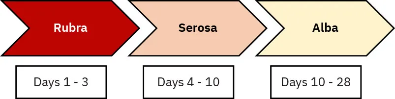

Página 3 · A marca da endometrite
A tríade e a leitura dos lóquios
A tríade que crava endometrite
A marca clássica da endometrite é uma tríade no útero: doloroso + amolecido + hipoinvoluído (subinvoluído). Útero que dói à palpação, com consistência amolecida, e que não desceu como deveria para a idade puerperal. Esses três atributos juntos são a assinatura da endometrite.
A tríade já basta — o odor é bônus
Ponto que a banca ama: febre no puerpério + a tríade já bastam para pensar em endometrite. Não é preciso o odor fétido. Se houver odor desagradável ou lóquios piossanguinolentos, isso é achado a mais — "de graça" —, não requisito. Muito candidato erra por achar que precisa do lóquio fedorento para fechar o diagnóstico; não precisa. O odor confirma, mas a ausência dele não afasta.
O que são lóquios
Lóquios são a secreção que sai no puerpério — uma mistura de sangue e restos celulares da descamação da cavidade uterina. Todo puerpério tem lóquios; o que muda é a cor ao longo dos dias, e é aí que está a informação diagnóstica.
A progressão normal dos lóquios
A progressão normal: hemático / avermelhado até o 3º–4º dia, depois amarelado e esbranquiçado ao longo do tempo. Ou seja, quanto mais o puerpério avança, mais o lóquio clareia. Sangue vivo nos primeiros dias é fisiológico; a tendência é desbotar.
Piossanguinolento é sempre anormal 🩸
Regra dura: lóquios piossanguinolentos são SEMPRE anormais. O "pio" vem de pus — se tem pus, tem infecção. Não existe lóquio piossanguinolento fisiológico. Repare no contraste com o tópico anterior: sangue avermelhado nos primeiros dias é normal; pus em qualquer dia não é. É o que separa o semáforo verde do vermelho.
Nota de honestidade visual: o esquema acima é autoral (as cores são o dado diagnóstico, controladas). Foto real do lóquio piossanguinolento comercial-segura não existe em banco aberto — decisão registrada para o Bauer (o especialista recomenda painel autoral do ilustrador para o polo anormal).
Interativo: toque em cada atributo da tríade.
O útero puerperal subinvoluído com os três marcadores da tríade de Bumm: doloroso, amolecido e hipoinvoluído. Cada hotspot ensina o que aquele sinal significa e por que os três juntos cravam o diagnóstico — o hotspot é o próprio elemento anatômico.
O dado diagnóstico é a cor da secreção. O normal clareia e reduz: rubra (vermelho, sangue e restos) → serosa (rosada, o componente sanguíneo cai) → alba (amarelada/esbranquiçada, sem odor). O diferencial perigoso é confundir a alba (clara, sem fetidez, com melhora clínica) com secreção infectada — o lóquio piossanguinolento/purulento, com odor fétido, febre ou dor uterina, é infecção até prova em contrário.
Rice University / OpenStax, Maternal Newborn Nursing, Fig. 20.6 — CC BY-NC-SA 4.0 · página de origem
O útero do caso
No exame da nossa paciente: desconforto no quadrante inferior, útero ao nível da cicatriz umbilical (subinvoluído — no 8º dia já deveria ter descido bem mais), colo aberto e lóquios piossanguinolentos. Ela tem a tríade completa mais o achado "de graça".
Juntando: febre + tríade + o achado "de graça"
O fechamento diagnóstico à beira do leito: febre persistente na janela certa + útero doloroso, amolecido e subinvoluído = endometrite. O lóquio piossanguinolento e o odor entram como confirmação extra, não como condição. Reconhecer isso rápido é o que a página treina.
Linha do Tempo — a raia de lóquios entra
A raia de lóquios agora está preenchida. A raia da mama entra na página 6.
Quiz — fixação
Sobre a marca clínica da endometrite, assinale a correta:
- B) Correta. A tríade (doloroso + amolecido + subinvoluído) somada à febre já aponta endometrite — sem depender do odor. É o conceito de "requisito × bônus".
- A) O odor fétido é achado "de graça", não requisito. Transformar um sinal confirmatório em condição obrigatória é o erro clássico.
- C) Lóquio avermelhado até o 3º–4º dia é normal (fase rubra). O que é anormal é o pus (piossanguinolento), não o vermelho inicial.
- D) A tríade são três sinais juntos; a subinvolução isolada não fecha nada. Reduzir a tríade a um único componente é a armadilha.
Julgue as afirmativas sobre os lóquios e marque a sequência correta (V/F): I. Lóquios piossanguinolentos podem ser fisiológicos nos primeiros dias. II. A progressão normal vai de hemático (até 3º–4º dia) para amarelado e esbranquiçado. III. O odor fétido é obrigatório para o diagnóstico de endometrite.
- A) F – V – F. I é falsa: piossanguinolento é sempre anormal — "pio" = pus = infecção, não há versão fisiológica. II é verdadeira: é a progressão fisiológica exata (rubra → serosa → alba, clareia com o tempo). III é falsa: o odor é bônus, não requisito — a mesma pegadinha da Q1.
- B) Erra a I ao aceitar piossanguinolento como fisiológico — troca "hemático (pode ser normal)" por "piossanguinolento (nunca normal)".
- C) Erra a III ao exigir odor fétido — cai na pegadinha do requisito × bônus.
- D) Erra I e III: aceita pus fisiológico e exige odor — dois erros no mesmo cartão.
Diagnóstico cravado — agora a decisão terapêutica de uma infecção polimicrobiana em obstetrícia, com o que se entra, por quanto tempo e quando se manda pra casa.